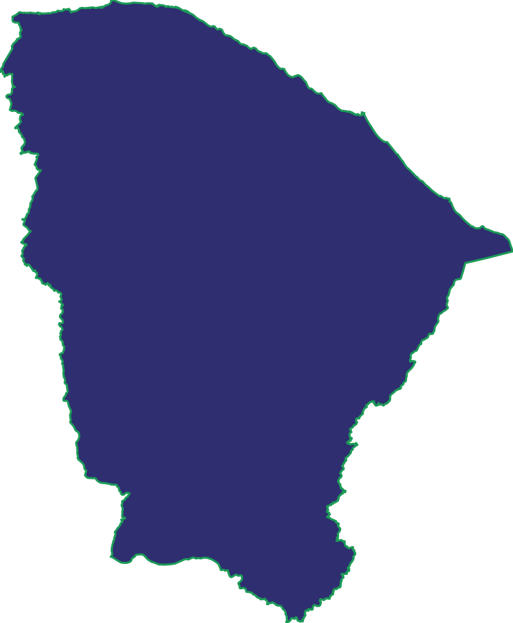

A 2D Representações Ltda é o braço comercial de sete marcas dentro do mercado cearense. Quem compra essas marcas está no supermercado, no atacado, na distribuição, no atacarejo e na farmácia — e é lá que a nossa equipe aparece.
A 2D foi fundada por Antonio Rodrigues e Diego Pesquera para fazer o trabalho que não se faz de longe: sentar com o comprador, entender como cada rede funciona por dentro e garantir que o produto chegue, apareça e gire.
Representar uma marca, para nós, é responder por ela aqui. A negociação e o pedido, claro — mas também tudo o que vem depois: entrega, devolução, comissão, campanha de vendas e a leitura franca do que os números estão dizendo.
Trabalhamos para os dois lados da mesma mesa. Se você compra, é com a nossa equipe que você resolve o dia a dia comercial. Se você é a indústria, a nossa estrutura passa a ser a sua no Ceará.
Venda boa é a que sai da gôndola. Por isso, o acompanhamento não termina no pedido aprovado — é ali que ele começa.
Cada visita gera informação, e nenhuma se perde: ela vira relatório de vendas, análise de metas e apresentação para o cliente e para a indústria, com o que foi comprado, o que saiu e o que precisa ser corrigido.
É trabalho de rotina, e é assim que preferimos: a mesma loja visitada de novo, o mesmo número conferido de novo. Marca forte no Ceará se constrói assim, e não em ação pontual.
Somos 11 pessoas: parte na rua, parte na retaguarda. Toda a equipe na mesma carteira, olhando a mesma informação.
As negociações das principais contas passam pelos sócios. Quem decide senta na mesa com você, e isso encurta o prazo de resposta dos dois lados.
Coordenação que planeja a execução no PDV e cobra o resultado: exposição, material, campanha e a prioridade de cada marca em cada loja.
Retaguarda que cuida de pedido, faturamento, agendamento de entrega, devolução e comissão. É aqui que o combinado com você vira processo.
Time em campo com roteiro de visita definido: leva o pedido, confere o estoque da loja e mantém o produto na frente do consumidor.
Atendemos o Ceará em cinco canais. Cada um compra de um jeito diferente, e o nosso atendimento muda junto.

Um mercado que conhecemos de perto.
Equipe própria no Ceará, com visita presencial e acompanhamento do que acontece depois de cada pedido.
Supermercado e rede de bairro, onde exposição e reposição decidem a venda.
Volume e giro, com atenção fina a preço, prazo e mix por operação.
Quem leva a marca ao interior, com apoio da nossa equipe em campo.
Loja que atende o consumidor e o pequeno comércio na mesma prateleira.
Rede e loja independente, com atendimento no ritmo do mix do canal.
Atendimento comercial, campanha no ponto de venda ou representação da sua marca no Ceará: conte o assunto e respondemos.